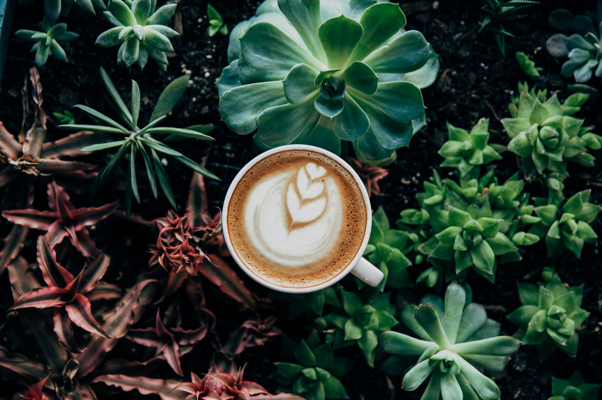

History of Coffee

Coffee is a beloved drink consumed and shared by many.
A brief timeline of Coffee:
- 6th-9th century CE: Ethiopian goat herder Kaldi noticed his goats acting more energetic after eating berries from a bush to which he roasts the beans and makes a concoction out of water and the beans, thus the first cup of coffee was born
- 11th century CE: Sufi monks of Yemen drank the coffee bean concoction, popularizing the drink
- 12th century CE: First cultivation in Arabian peninsula
- 15th century CE: Coffee first exported out of Yemen and first coffee house opened in Istanbul, Turkey
- Early 1600s: Coffee enters into Europe and first coffee houses begin to open around Europe
- Mid-1600s: Coffee introduced to New World and coffee houses increase around the world
- Late 1600s: First cultivation in India and Indonesian
- Early 1700s: First cultivation in the Carribean and South America
- 1773: Americans drink coffee instead of tea following Boston Tea Party
- 1788: Haiti supplies half the world's coffee
- 1852: Brazil becomes world's biggest coffee producer
- 1865: First beans roasted and sold on the market in Pittsburgh, Pennsylvania
- 1888: Japan opens its first coffee house
- Early 1900s: Decaffeination process successfully executed in Germany and first commercial espresso machine invented in Italy
- 1938: Instant coffee invented in Switzerland, known as Nescafe
- 1940s: The term "coffee break" becomes more common in the workplace to boost productivity during workday
- 1971: First Startbucks opens
- 1995 to today: Coffee consumption skyrockets and coffee shops become more commonplace.
Coffee has become one of the most popular beverages around the world and is one of the world's most traded commodities. Think about how far the beverage has come the next time you take a coffee break!